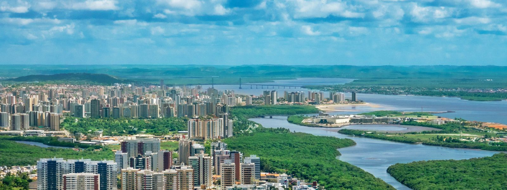
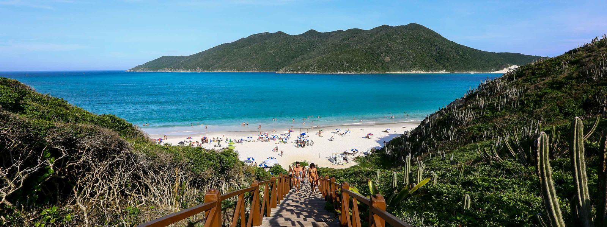
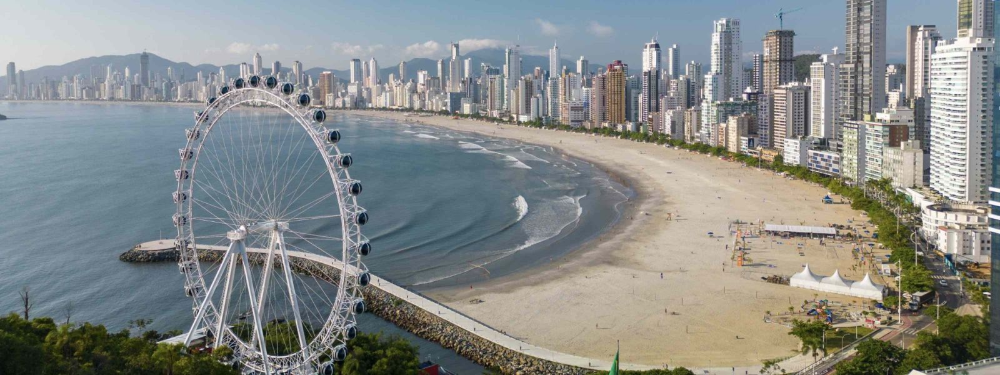
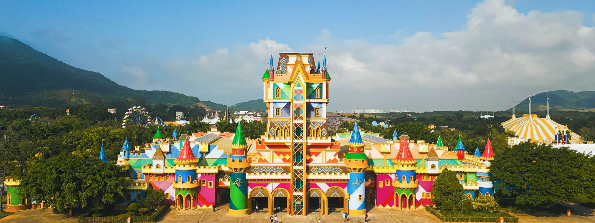
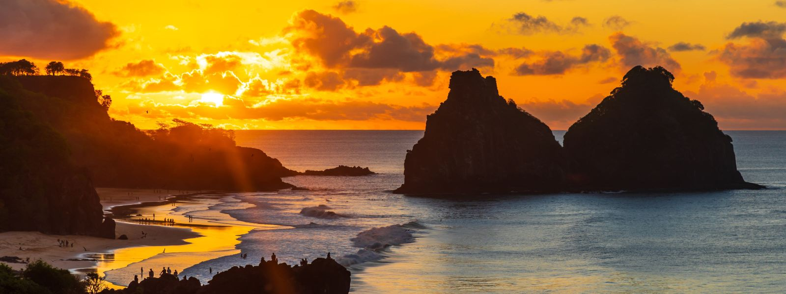

Guia de destinos
Tudo que você precisa saber sobre sua viagem! O que fazer, onde ficar, dicas de restaurantes, compras e muito mais. Confira!

Alter do Chão
Alter do Chão encanta com suas águas claras, praias de areia branca e natureza exuberante no coração da Amazônia.

Aracaju
Aracaju oferece tranquilidade, belas orlas e ótima infraestrutura, sendo perfeita para quem busca descanso e cultura nordestina.

Arraial do Cabo
Arraial do Cabo é famoso por suas águas cristalinas e paisagens paradisíacas, ideal para mergulho e passeios de barco inesquecíveis.

Baleário Camboriú
Balneário Camboriú combina praias urbanas, vida noturna agitada e atrações modernas, sendo um dos destinos mais vibrantes do Brasil.

Beto Carrero
O Beto Carrero World é o maior parque temático da América Latina, com atrações para todas as idades e muita diversão garantida.

Fernando de Noronha
Fernando de Noronha é um verdadeiro paraíso ecológico, com praias preservadas, vida marinha abundante e cenários de tirar o fôlego.